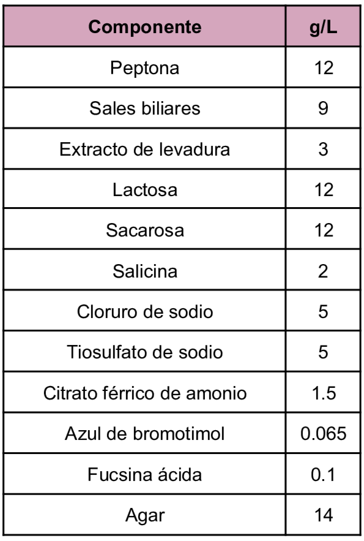
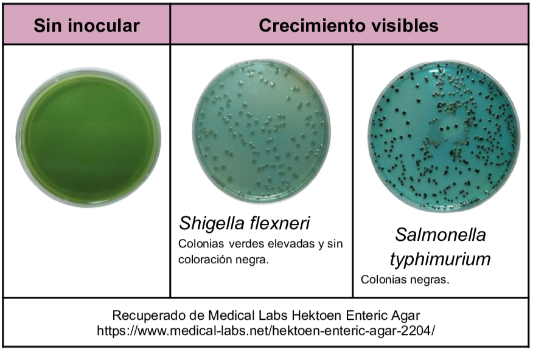

Medio diferencial y selectivo utilizado para el aislamiento de enterobacterias particularmente Salmonella y Shigella en muestras tanto clínicas como de alimentos, dentro de su composición se encuentran los carbohidratos fermentables los cuales son lactosa, sacarosa y salicina, por otro lado las sales biliares actúan como agente selectivo ya que inhiben el crecimiento de Gram positivas y de algunas Gram negativas, como indicadores pH se encuentran el azul de bromotimol y la fucsina por último el citrato de hierro permite la visualización de la formación de H₂S.
Composición

pH a 25°C 7.5±0.2
Resultados Posibles
Derivado de la presencia de las carbohidratos su utilización genera cambios en el pH permitiendo la diferenciación entre las bacterias fermentadoras y las no fermentadoras:
- Fermentadoras: colonias amarillas o naranjas
- No fermentadoras: colonias verde-azuladas
Además gracias al citrato férrico de amonio permite la visualización de colonias negras que producen ácido sulfhídrico.

Referencias
Aryal, S. (2022) MacConkey Agar- Composition, Principle, Uses, Preparation and Colony Morphology. https://microbiologyinfo.com/macconkey-agar-composition-principle-uses-preparation-and-colony-morphology/
Britannia (2021) Hektoen Entérico Agar. https://www.britanialab.com/storage/productos/ht-hektoen-enterico-Ait5E.pdf
BD (2013) BD Hektoen Enteric Agar (HE Agar) https://amyd.quimica.unam.mx/pluginfile.php/9874/mod_folder/content/0/Agar%20Hektoen.pdf?forcedownload=1